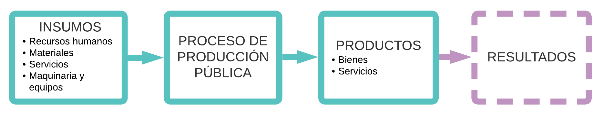
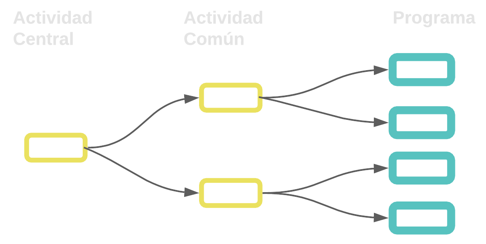
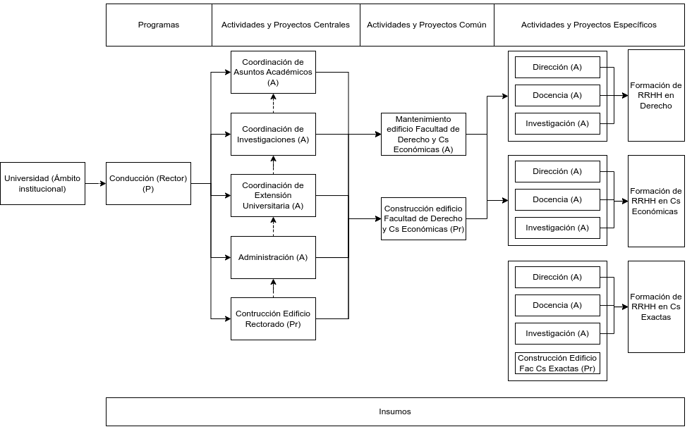
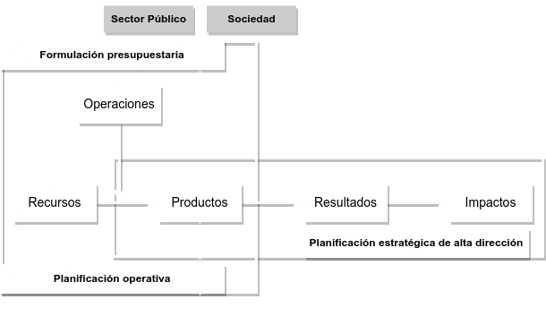
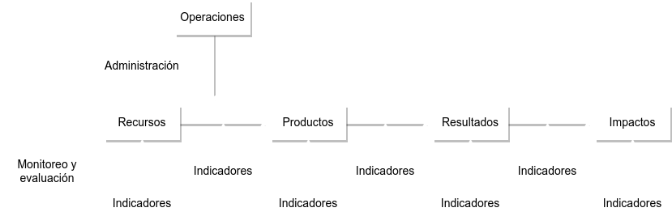
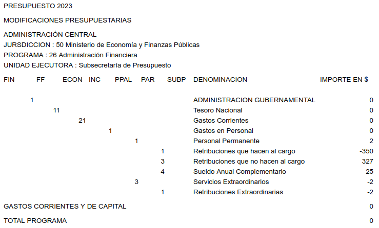

#### Presupuesto Público ## Conceptos básicos del presupuesto por programas y su ejecución ###### [Lic. Matías Grandi](mailto:matiasgrandi@gmail.com) <small><b><center>Octubre de 2022<br> Legislatura de la Ciudad Autónoma de Buenos Aires</center></b></small> --- # BASES CONCEPTUALES DEL SISTEMA PRESUPUESTARIO -- ### ¿Qué es el presupuesto? - Es una ley - Es un ámbito de toma de decisiones de alto rango (políticas presupuestarias) - Es un instrumento de uso de fondos y de rendición de cuentas - Es un sistema de información - No es un plan estratégico -- ### Técnicas Presupuestarias Instrumentos que permiten una mejor asignación y ejecución de los recursos, escasos por definición, facilitando el control y evaluación, por contraposición al presupuesto tradicional o incremental. Ejemplos: - Presupuesto por Programas (PPP) - Presupuesto Base Cero (PBC) - Presupuesto por Resultados (PpR) --- # PRESUPUESTO POR PROGRAMAS ## ASPECTOS TEORICOS -- ### Definición El presupuesto por programas (PPP) es una técnica mediante la cual se procura asignar, a determinadas categorías programáticas a cargo de las jurisdicciones y entidades que conforman la Administración Pública, recursos necesarios para producir y proveer bienes y servicios destinados a satisfacer, de manera eficaz y eficiente, necesidades de la comunidad durante un período preestablecido. -- ### Insumos - Recursos humanos - Materiales - Servicios - Maquinaria y equipos -- ### Productos Bienes o servicios. Surgen como resultados de la combinación de insumos -- ### RELACIONES DE INSUMO PRODUCTO Relación que se establece entre los distintos insumos. Se combinan en el proceso de producción en cantidades y calidades adecuadas y precisas Para que exista una relación I-P el producto debe ser único e independiente de otra relación de I-P. -- ### RELACIONES DE INSUMO PRODUCTO  -- ### Tipos de productos - Intermedios - Directos - Indirectos - Terminales - Acabados - En proceso -- #### Tipos de Productos ### Productos Intermedios Satisfacen demandas internas de la Institución. Son destinados a la elaboración de otros productos. - Directos/ Actividades Específicas - Indirectos/ Actividades Centrales/ Comunes -- #### Tipos de Productos ### Productos terminales Constituyen la razón de ser de la Institución. Satisfacen demandas o necesidades externas a la Institución. - Programas - Subprogramas -- ### Programa - Categoría programática de mayor nivel - Expresa contribución a una política - Producción terminal - Se conforma con categorías programaticas de menor nivel -- ### Subprograma - Cuando la producción terminal de un programa admite desagregación en grupos de productos terminales. - Produccion terminal parcial - Producción terminal sumable en unidades físicas - Los recursos físicos y financieros se suman a nivel de programa -- ### Actividad - Categoría programática de menor nivel - Su producción es siempre intermedia - De acuerdo a su relación con la producción terminal puede ser específica, central o común -- ### Actividades Específicas - Condicionan directamete la producción de un porgraam en particular - Categorías programaticas de minimo nivel en la desagregación del programa -- ### Actividades Centrales - Condicionan indirectamente la producción de todos los programas - La producción intermedia que genera no forma parte de ningún programa en particular -- ### Actividades Comunes - Condicionan indirectamente la producción de dos o mas programas, pero no todos - La producción intermedia que genera no forma parte de ningún programa en particular -- #### Actividades centrales y comunes  -- ### Proyecto - Su producto es un bien de capital - Es capaz de satisfacer necesidades al finalizarse su elaboración - Consiste en un conjunto de actividades y obras complementarias - Particularidad del concepto de centro de gestión productiva - Pueden existir proyectos centrales, comunes o específicos -- ### Obra - Categoría programática de mínimo nivel en el campo de la inversión - Contribuye al logro del propósito del proyecto -- | _Proyecto_ | _Construcción de un hospital_ | | |----------|-------------------------------------------------|---| | | | | | **Obra 1** | **Obra Civil** | | | | > 01 Movimiento de tierras | | | | > 02 Reacondicionamiento de los servicios básicos | | | | > 03 Pavimento | | |**Obra 2** |**Equipamiento** | | | | > 01 Equipos de Laboratorio | | | | > 02 Mobiliario | | | | > 03 Equipos de Computación | | | | > 04 Central Teléfonica | | | | > 05 .... | -- #### Red de categorías programáticas de una institución  -- ### Conclusión "El presupuesto por programas (PPP) es una técnica mediante la cual se procura asignar, a determinadas categorías programáticas a cargo de las jurisdicciones y entidades que conforman la Administración Pública, recursos necesarios para producir y proveer bienes y servicios destinados a satisfacer, de manera eficaz y eficiente, necesidades de la comunidad durante un período preestablecido." -- #### Cadena de valor público  -- #### Cadena de valor público  Los macroprocesos (planificación, formulación presupuestaria, adm. de recursos, M&E, control de gestión y rendición de cuentas) operan sobre la misma cadena de valor público, de modo que la identificación y formulación de estos elementos y de sus indicadores deben ser consistentes en los cinco procesos, así como debe serlo también la información que se produzca y emplee acerca de ellos. --- # Ejecución Presupuestaria -- #### Ejecución Presupuestaria # Concepto Existe una Ejecución Presupuestaria de Recursos y una de Gastos que se produce desde el inicio del ejercicio presupuestario (determinado por la carga del Acto Distributivo) y hasta el cierre de dicho ejercicio. -- #### Ejecución Presupuestaria ### Ejecución de un recurso Se ejecuta presupuestariamente un Recurso cuando: - se devenga (o sea que por una relación jurídica se establece un derecho de cobro a favor de la Administración Nacional y, al mismo tiempo, se genera una obligación de pago por parte de personas físicas o jurídicas); - se percibe el recurso en el momento en que los fondos ingresan o se ponen a disposición del Tesoro Nacional (oficina recaudadora facultada para recibirlo). -- #### Ejecución Presupuestaria ### Ejecución de un Gasto En el momento en el cual se comienza a efectuar el gasto que fue aprobado en la Ley de Presupuesto, y que se perfecciona con el pago. En resumen se ejecuta presupuestariamente un gasto cuando: - se compromete (cuando el estado se compromete a efectuar un gasto); - se devenga (determina que el estado tiene una obligación de pago.); - se paga un gasto --- # Etapas de la Ejecución del Gasto -- #### Etapas de la Ejecución del Gasto ## Compromiso Implica la aprobación, por parte del funcionario competente, de la aplicación de recursos por un concepto e importe determinados. Además, tiene lugar una afectación preventiva del crédito presupuestario que corresponda, en razón de un concepto, que reduce su importe del saldo disponible. Surge una relación contractual con terceros -- #### Etapas de la Ejecución del Gasto ## Devengado En esta etapa surge una obligación de pago por la recepción de conformidad de bienes o servicios oportunamente contratados o bien, por haberse cumplido los requisitos administrativos para los casos de gastos sin contraprestación. También implica la afectación definitiva de los créditos presupuestarios referibles por un concepto y monto a la respectiva liquidación. -- #### Etapas de la Ejecución del Gasto ## Pagado A través de la etapa del pago, se refleja la cancelación de las obligaciones asumidas en materia de gasto. --- # RÉGIMEN DE CUOTAS -- ## Sistema de cuotas - Cuota de Compromiso (Trimestral) - Cuota de Devengado (Mensual) - Cuota de Caja (diaria) -- ## Sistema de cuotas Las cuotas **no se acumulan trimestralmente**. Sólo la cuota de devengado **acumula los saldos mensuales no consumidos en el trimestre**. Las cuotas se piden con antelación al inicio del trimestre. -- ## Niveles de aprobación de cuotas - Fuente de Financiamiento - Jurisdicción - Servicio - Inciso: 1, 2, 3, y 4 - Principal: 5.7 y 5.8 - Parcial: 5.1.3, 5.1.4, 5.1.7, 5.1.9, 5.2.0, 5.5.2, 5.5.4, 5.6.1 , 5.6.2 -- ## Ejecución de las cuotas Las cuotas no se asigan por programa, y **su consumo es concurrente entre los programas de la misma FF, inciso, principal y parcial** (según corresponda). --- # Modificaciones presupuestarias -- ## Origen - Sobreestimaciones o Subestimaciones de Recursos - Incorporación o reducción de créditos, programas, proyectos o cualquier categoría programática - Necesidades de ejecución de los Organismos -- ## Base legal <p> **Ley 24.156** - Artículo 17: establece como una de las facultades de la ONP dictar normas referidas a modificaciones presupuestarias _c) Dictar las normas técnicas para la formulación, programación de la ejecución, **modificaciones** y evaluación de los presupuestos de la administración nacional_ </p> -- ## Base legal <p> **Ley 26.124** (ley de _superpoderes_) Artículo 37: dispone que _"la reglamentación establecerá los alcances y mecanismos para efectuar modificaciones presupuestarias._ _Quedan reservadas al Congreso Nacional:_ - _Monto total del presupuesto_ - _Endeudamiento previsto_ - _Incremento de partidas de gastos reservados y de inteligencia"_ </p> -- ## Base legal <p> Se delegó al Jefe de Gabinete de Ministros: Reestructuraciones presupuestarias dentro del monto total aprobado por la ley de presupuesto. Ello comprende: Modificaciones que involucren gastos corrientes y de capital Aplicaciones Financieras Modificaciones en las finalidades </p> -- ## Base legal <p> **Decreto Nº 1334/07** (reglamentario de la Ley 24.156) Artículo 37: establece que al decretarse la distribución administrativa del Presupuesto de gastos, el PEN establecerá los alcances y mecanismos para llevar a cabo las modificaciones presupuestarias dentro de los límites que la ley 24.156 señala. </p> -- ## Base legal <p> **Ley 24.156** Artículo 39: Faculta al PEN a autorizar gastos no incluidos en la Ley de Presupuesto para atender el socorro inmediato por parte del gobierno cuando ocurran acciones no previstas tales como: epidemias, inundaciones, u otros de fuerza mayor. </p> -- ### Qué partidas se modifican? Solamente partidas “limitativas” Por razones de ordenamiento interno los SAF pueden modificar partidas “indicativas” -- ### Modificación presupuestaria  --- # Bibliografía - [Ley 24.156 (Ley de Administración Financiera)](https://servicios.infoleg.gob.ar/infolegInternet/anexos/0-4999/554/texact.htm) - [Decreto 1.334/07](https://servicios.infoleg.gob.ar/infolegInternet/anexos/130000-134999/133006/texact.htm) - [Ley 26.124](https://www.argentina.gob.ar/normativa/nacional/ley-26124-118648/texto) - Material del "Curso interamericano de administración financiera y control del sector público nacional", Secretaría de Hacienda. - Presupuesto Abierto - [www.presupuestoabierto.gob.ar](https://www.presupuestoabierto.gob.ar/) - [Decisión Administrativa 4/2023](https://www.argentina.gob.ar/normativa/nacional/decisi%C3%B3n_administrativa-4-2023-378029/texto)